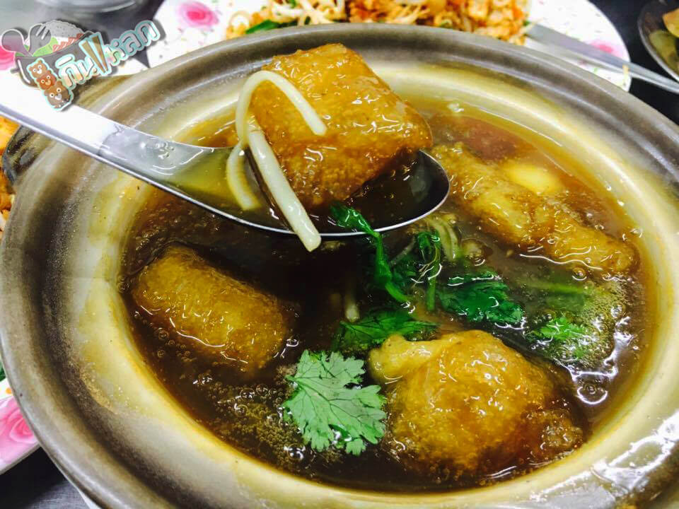
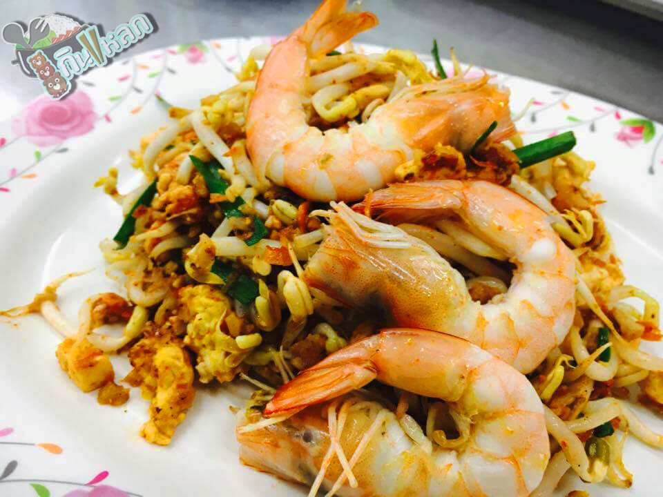
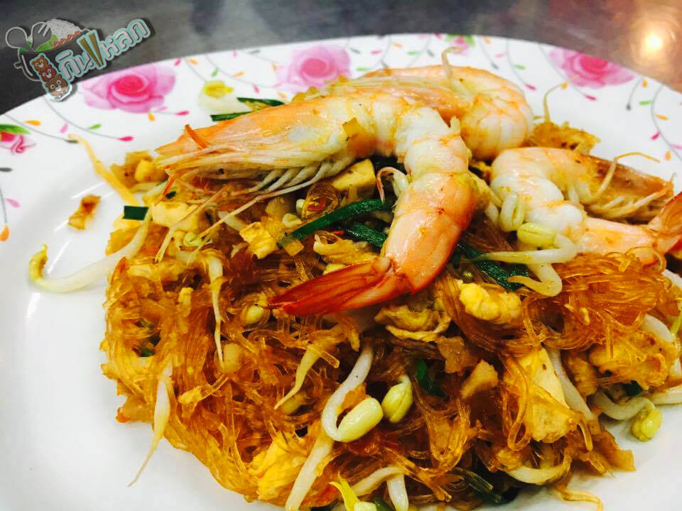
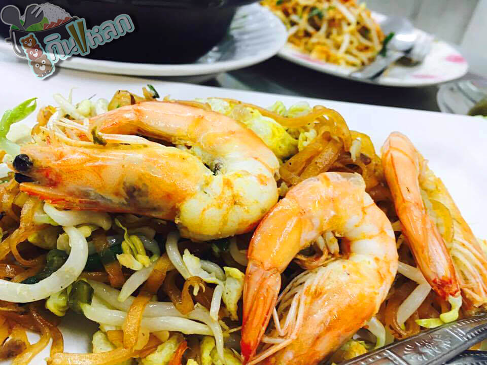

เซตโจ๊กหม้อเติบ
โจ๊กหม้อเติบ
โจ๊กหม้อไฟร้อนๆ ถูกแต่งเติมรสชาติตามที่เราเลือกสรรเอง ทำให้โจ๊กเดิมๆกลายเป็นความโดดเด่นขึ้นมา
กระเพาะปลาน้ำแดง
ผัดไทย กระเพาะปลา ไทยอาคาร
มาร้านนี้ต้องสั่ง เพราะนี่คือเมนูแนะนำชูโรงของทางร้าน ความเป็นเอกลักษณ์ของกระเพาะปลา ที่อิสลามก็สามารถทานได้
น้ำกระเพาะปลาที่เข้มข้นหนืดๆชวนให้น้ำลายไหล และรสชาติกลมกล่อมที่ได้สัมผัส เหมาะสมแล้วที่มีอายุของร้านยืนยาวขนาดนี้


ผัดไทไม่ใส่เส้นกุ้งสด
ผัดไทย กระเพาะปลา ไทยอาคาร
แด่คนที่ไม่ชอบเส้น แต่อยากกินผัดไท ตอบโจทย์มาก เมนูนี้ชวนชิม เพราะเครื่องปรุงแน่นสุดเพราะไม่ต้องมีเส้นอะไรมาทำให้เครื่องดรอปลง กินคู่กับกุ้งแล้วยิ่งดีต่อใจไปอีก รสชาติดีๆแบบนี้ เราอยากให้คุณไปลองชิมดู
ผัดไทวุ้นเส้นกุ้งสด
ผัดไทย กระเพาะปลา ไทยอาคาร
อีกตัวเลือกสำหรับคนชอบกินวุ้นเส้นแต่อยากกินผัดไท เส้นวุ้นเส้นนุ่มๆเครื่องปรุงแน่นๆ กุ้งสดที่สดมากจนรับรู้ได้ถึงความหวานของเนื้อกุ้งที่แท้จริง้


ผัดไทกุ้งสด
ผัดไทย กระเพาะปลา ไทยอาคาร
เส้นผัดไทที่เหนียวนุ่มคลุกเคล้ากับเครื่องปรุงที่เข้มข้น กุ้งตัวใหญ่ที่ดึงดูดสายตาผู้กิน และความประทับใจของรสชาติดั้งเดิมที่ไม่ได้หายไป
แกงส้มไข่เจียวกุ้ง
ครัว ปะ-หยัด
แกงส้มร้อนๆกับไข่เจียวและกุ้งสดที่เข้ากันได้อย่างลงตัวรสชาติที่เด็กก็สามารถทานได้ เมื่อทานกับข้าวสวยร้อนๆแล้วก็ทำให้เจริญอาหารได้ดียิ่งขึ้น
ปลากะพงทอดน้ำปลา
ครัว ปะ-หยัด
ปลากะพงตัวใหญ่ทอดด้วยน้ำปลาเพิ่มรสชาติให้เนื้อปลาที่สดใหม่ มียำรสชาติเด็ดเอามาราดเพิ่มเติมทำให้ปลากะพงมีรสชาติที่กลมกล่อมมากยิ่งขึ้นไปกว่าเดิม
ปลาปะ-หยัด
ครัว ปะ-หยัด
ปลากะพงราดด้วยน้ำซอสสูตรเฉพาะของทางร้าน ที่เด็กๆสามารถทานได้รสชาติที่โดดเด่นด้วยน้ำซอสนั้นเหมาะกับการทานกับข้าวอย่างมาก
ข้าวหมูทอดกระเทียม
ครัว ปะ-หยัด
อาหารจานเดียวอีกจานที่ถูกเลือกคือหมูทอดกระเทียมที่มีการคัดสรรวัตถุดิบมาอย่างดี อาหารพื้นฐานของไทยที่ไม่ทำให้ผิดหวัง ถ้าหากได้มาที่ร้านก็สามารถสั่งเมนูธรรมดาแต่พิเศษในความรู้สึกอันนี้ได้
เครื่องแกงหมูกรอบ
ครัว ปะ-หยัด
ขอาหารจานเดียวที่ได้ถูกเลือกมานำเสนอในหน้านี้ หมูกรอบถูกคลุกเคล้าเข้ากับเครื่องแกงที่จัดจ้าน รสชาติจัดจ้านของเครื่องแกงให้ความรู้สึกพอดีเมื่อทานคู่กับข้าวสวยร้อนๆ
ข้าวหน้าแกงกะหรี่กุ้ง
ฮอกไกโด
กุ้งตัวใหญ่ๆถูกราดด้วยแกงกะหรี่รสเด็ดที่ทำให้จานข้าวมีความอร่อยและน่าหลงใหลมากขึ้น
ข้าวหน้าปลารวมเบ็นโตะ
ฮอกไกโด
ข้าวญี่ปุ่นถูกโรยหน้าด้วยเนื้อปลาหลากหลาย ปิดท้ายด้วยไข่ปลาและไข่กุ้งที่น่ากิน ทั้งยังมีไข่หวานและผักเพื่อทำให้รสชาติดีขึ้นอีกด้วย